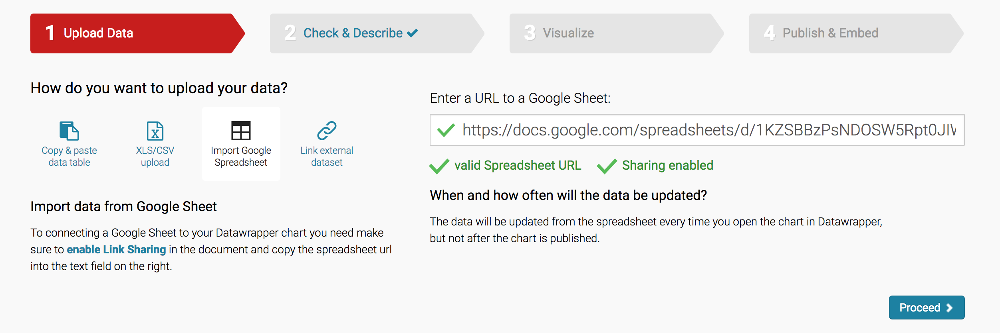

We're going to be using a slightly tweaked version of Datawrapper's own fabulous tutorial series to make a bar chart, line chart, and map.
Here's a bar chart of the states with the highest immigrant population (as of 2016). We're going to make it from scratch.
| State | Immigrant Population |
|---|---|
| California | 10677700 |
| Texas | 4729900 |
| New York | 4536100 |
| Florida | 4236500 |
| New Jersey | 2016100 |
| Illinois | 1783500 |
| Massachusetts | 1123900 |
Source: Migration Policy Institute
There are lots of ways to import data into Datawrapper, but we'll start with the easiest one – copy and paste!
Your dataset should be formatted like this:
Note that the big numbers for immigration are intentionally without commas or extra formatting. Unformatted numbers are always best!
Copy the dataset into the upload field in Datawrapper. Then click "Proceed" and continue.
Make sure everything looks good here. Note that because I pasted in the header rows "Year" and "Number of Immigrants", I check the "First row as label" button. That will make sure that it doesn't think those fields are actual data!
If everything looks fine, then click "Proceed."
Datawrapper will try to guess what format your data should be in. Here, it's guessing a line chart (Cue discussion of line charts vs bar charts!) But I actually want a bar chart, so I'm going to select bar chart from the menu of chart types.
Better! Now we have lots of options for how to style and annotate this chart, in the refine, annotate, and design tabs.
There are lots of things you can do in the Refine tab.
Sorting: Depending on the angle of your story, you may want to sort the bars.
Labeling: You can align the numbers left or right, display grid lines, change the number formatting, etc.
Appearance: You can change the color of the bars, make the bars thicker, add a separating line, or a background to the bars.
In this case, I'm going to give the bars a background grey and make them thicker and dark red, and also separate rows with dotted line.
Next we go to the Annotate tab.
Let's give the chart a title, description, and add the source of the data. If you have a URL to the data source, that's even better.
We're going to quickly pass by the Design tab, and go straight to Publish!
The most important step of all: publishing our chart!
Once you click Publish, you have the option of sharing, embedding, exporting or duplicating your chart.
And you're done!
Bonus question to consider: California, Texas, New York and Florida are pretty populous states. What other metric of immigration population could we use to represent the "top" immigrant states? Hint.
We're going to recreate a line chart of backlogged immigration cases. The original Datawrapper chart was made by Carl V. Lewis, and data is from Syracuse University's TRAC reports. I've pulled the data from the TRAC website and stuck it in this spreadsheet.
Source: TRAC
We'll follow the same steps as before, and start with uploading our data. This time rather than copying and pasting, we're going to link directly to a Google Spreadsheet.
Paste in this URL:
https://docs.google.com/spreadsheets/d/1KZSBBzPsNDOSW5Rpt0JIWm-ZlmvLcNuDHVh5qufNcVc/edit#gid=0
If all goes well, it should give you some green checkmarks to indicate that there are no issues with the spreadsheet. Remember: the spreadsheet has to by public for this to work.
 Or https://www.migrationpolicy.org/sites/default/files/datahub/MPI-Data-Hub_USInflowLPRsbyCOB_2016.xlsx